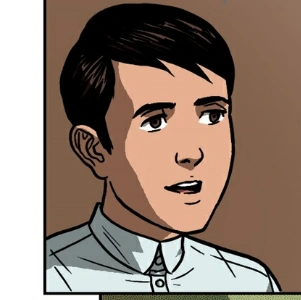
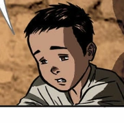
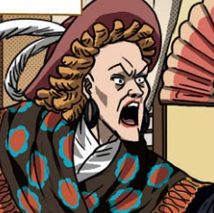
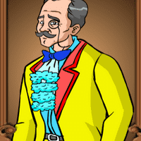

| CHARACTERS IN NOLI ME TANGERE |
|---|
|  | Basilio |
- Child of Sisa and Pedro.
- Brother of Crispin.
- A sacristan, had a dream of Crispin getting beaten to death by the sacristan mayor and Padre Salvi.
|
|  | Crispin |
- Child of Pedro and Sisa.
- Brother of Basilio.
- A sacristan, but was beaten to death by the sacristan mayor and Padre Salvi.
-
|
|  | Donya Victorina de Espanyada |
- Wife of Don Tiburcio.
- She's a Socialite and a friend of Kapitan Tiago.
|
|  | Don Tiburcio de Espanyada |
- Husband of Donya Victorina.
- Also a friend of Kapitan Tiago.
- He is also known as a fake doctor.
|